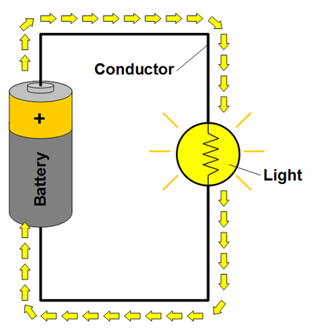
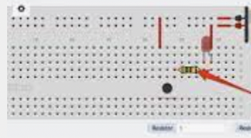
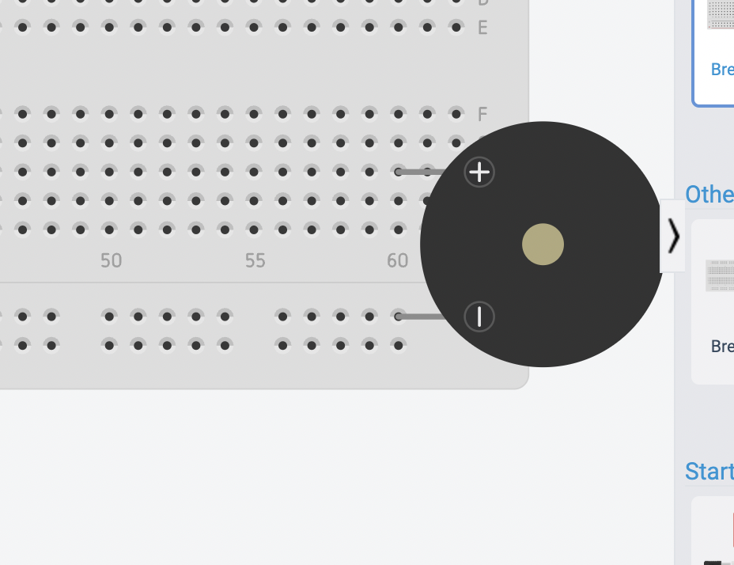

What You Should Know - Tinkercad Circuits: Piano Circuit
 Important Vocabulary
Important Vocabulary
- Breadboard – an electric tool which can be used to test electrical circuits
- Piano – a musical instrument that makes sound when each key moves a small hammer that strikes a metal string
- Piezo Buzzer – a type of electronic device that’s used to produce a tone, alarm or sound
- Pushbutton – a button that is pushed to operate an electrical device
- Circuit – a path for electricity to flow
- Simulate – to practice or produce a computer model of something
- Electricity – a form of energy
Circuit
Electricity flows from a power source (like a battery) along a path (a wire or another conductive material) to a load (an electrical device like a light), and then back in a loop.
All circuits have these three parts:
- power source (battery)
- load or resistor
- conductor (wire path)

A load is also called a resistor because it creates resistance between the two ends of the power supply. The resistor needs electricity to work, and as it does, it reduces the current flow. In this example, the resistor is a light. As the bulb uses some of the electricity to light up, it reduces the current.
A path does not have to be made of wires. It just needs to be made of a conductive material so there is a path between the power source and the resistor. Some circuits use metal strips, some use magnets, Tinkercad Circuits uses wires (which you can color code). Copper wire in conductive. Can you think of other conductive materials?
Breadboard
A breadboard is an electronic tool that can be used to test electrical circuits. Many people use breadboards because soldering is not needed which makes it easier to test circuits. The breadboard most commonly used today is usually made of white plastic and is a pluggable breadboard.

Piezo Buzzer
Piezoelectric buzzers are used to produce audible signals in alarms and warning devices. Piezo buzzers are available in a wide range of frequencies.

Piano
The piano is a keyboard instrument that produces sound when pressed on the keys. Most modern pianos have a row of 88 black and white keys: 52 white keys for the notes of the C major scale (C, D, E, F, G, A and B) and 36 shorter black keys raised above the white keys and set further back, for sharps and flats. Pianos use the keys to move hammers that hit strings inside, making a sound. Pianos come in two basic types: grand pianos and upright pianos. Playing the piano usually involves all ten fingers.
Career Connection and Real-World Application
Electrical Engineer
Electrical engineers create, invent, improve and fix electronic devices, tools and equipment. Electrical engineers use science, math and research to develop all kinds of small and large devices. Some devices include the electrical systems of automobiles and airplanes. Electrical engineers use many tools to help them work with electronics. This includes: current and voltage probes to take electricity measures, signal generators to create high-speed serial data and Oscilloscopes to study the flow of electricity.

Circuit Analyzer
Circuit analyzers apply mathematical formulas and rules, such as Kirchhoff's and Ohm's laws, to analyze the voltage and current in each circuit component. Circuit analyzers troubleshoot electronic systems and components to help them run smoothly.